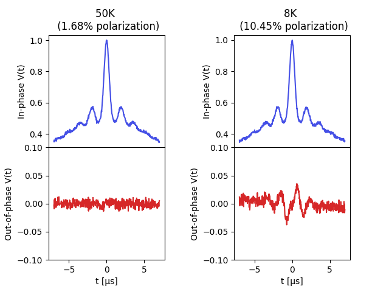

Note
Click here to download the full example code
Simulating polarization effects on low-temperature DEER¶
An example on how to simulate the effects of low-temperatures on DEER signals due to the breaking of the high-temperature limit and the introduction of out-of-phase contributions (to emulate the simulations by [Sweger et al.](https://doi.org/10.5194/mr-3-101-2022)).
This example simulates such signals at two different temperatures assuming a two-pathway 4-pulse DEER model, with the same refocusing times, opposite-sign harmonics, and a difference in amplitude given by the spin polarization.
import numpy as np
import matplotlib.pyplot as plt
import deerlab as dl
violet = '#4550e6'
# Boltzmann constant
kB = 1.38064852e-23 # J/K (CODATA 2018)
μB = 9.2740100783e-24 # Bohr magneton, J/T (CODATA 2018)
ge = 2.00231930436256 # Free-electron g factor (CODATA 2018)
# Define effective dipolar evolution time vector
t = np.linspace(-7,7,500)
# Define distance range vector
r = np.linspace(2,6,200)
# Simulate distance distribution
P = dl.dd_skewgauss(r,center=4.3,std=0.3,skew=20)
# Simulation parameters
moddepth = 0.4
conc = 190 # μM
tref = 0 # μs
Bfield = 1248 # mT
Bfield = Bfield/1000 # mT->T
temperatures = [50,8] # K
fig, axs = plt.subplots(nrows=2, ncols=2, sharex=True)
for n,T in enumerate(temperatures):
# Calculate the spin polarization
polarization = np.tanh(ge*μB*Bfield/(2*kB*T))
λ1 = moddepth/2-polarization/2
λ2 = moddepth/2+polarization/2
# Define the harmonics of both pathways
δ1 = 1
δ2 = -1
# Simulate the intermolecular contributions
Vinter1 = dl.bg_hom3d(δ1*(t-tref),conc,λ1)*dl.bg_hom3d_phase(δ1*(t-tref),conc,λ1)
Vinter2 = dl.bg_hom3d(δ2*(t-tref),conc,λ2)*dl.bg_hom3d_phase(δ2*(t-tref),conc,λ2)
Vintra1 = dl.dipolarkernel(δ1*(t-tref),r,complex=True)@P
Vintra2 = dl.dipolarkernel(δ2*(t-tref),r,complex=True)@P
# Unmodulated contribution
Λ0 = 1 - λ1 - λ2
# Compute the full dipolar signal
Vsim = (Λ0 + λ1*Vintra1 + λ2*Vintra2)*(Vinter1*Vinter2)
# Add noise
std = 0.005
Vsim = Vsim + 1j*dl.whitegaussnoise(t,std) + dl.whitegaussnoise(t,std)
axs[0][n].plot(t,Vsim.real,color=violet)
axs[0][n].set_title(f'{T:n}K \n ({100*polarization:.2f}% polarization)')
axs[0][n].set_xlabel('t [μs]')
axs[0][n].set_ylabel('In-phase V(t)')
axs[1][n].plot(t,Vsim.imag, color='tab:red')
axs[1][n].set_ylim([-0.1,0.1])
axs[1][n].set_xlabel('t [μs]')
axs[1][n].set_ylabel('Out-of-phase V(t)')
n += 1
plt.subplots_adjust(wspace=0.6, hspace=0)
plt.show()
Total running time of the script: ( 0 minutes 0.686 seconds)